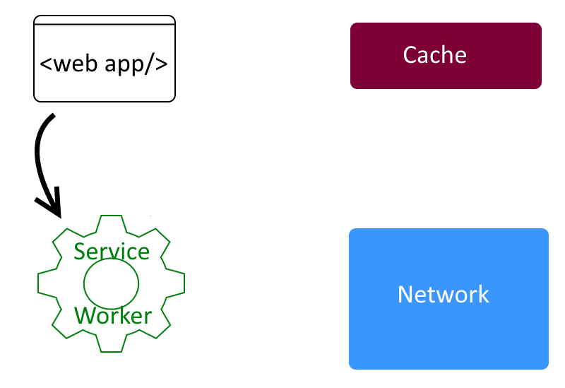
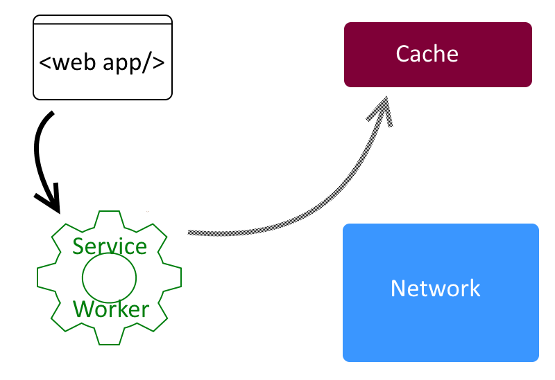
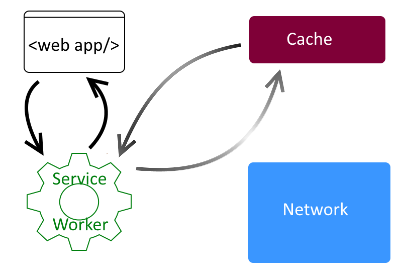
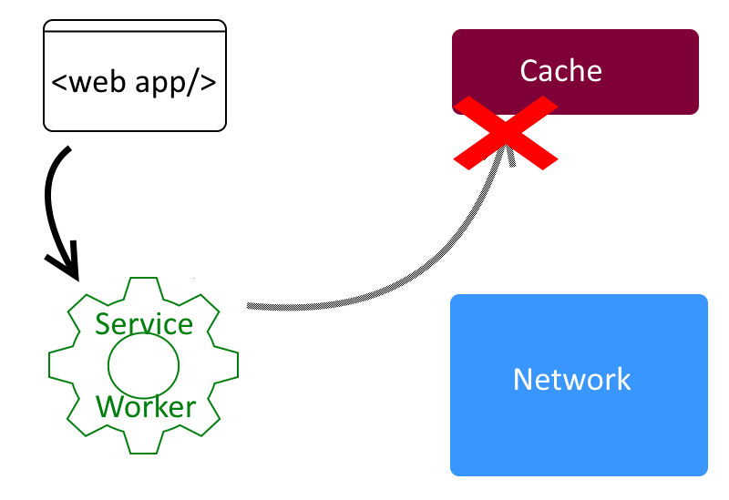
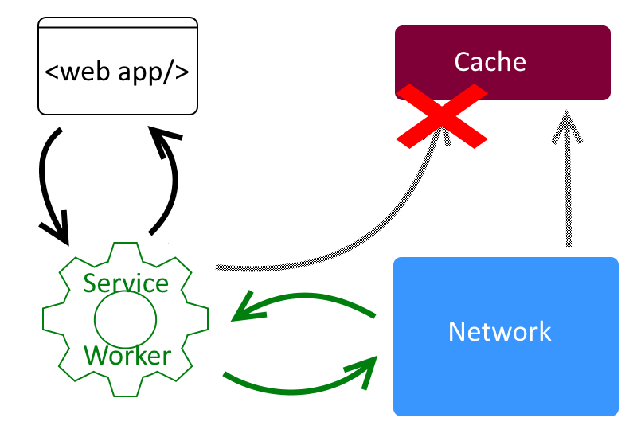
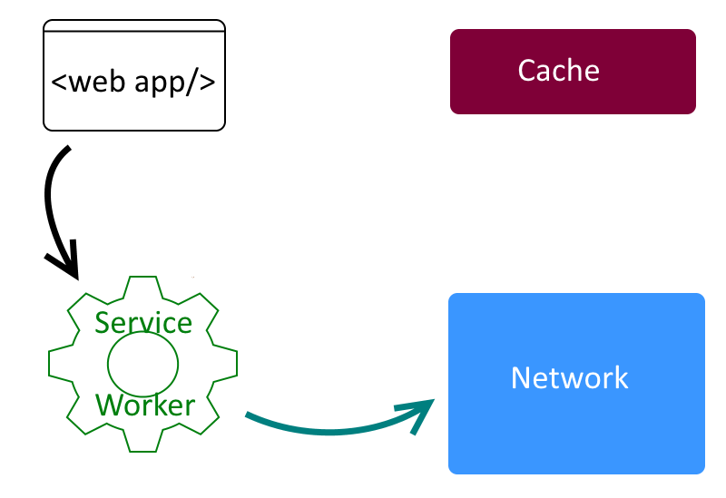
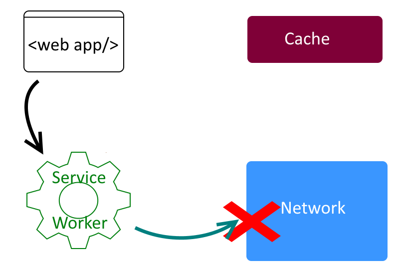
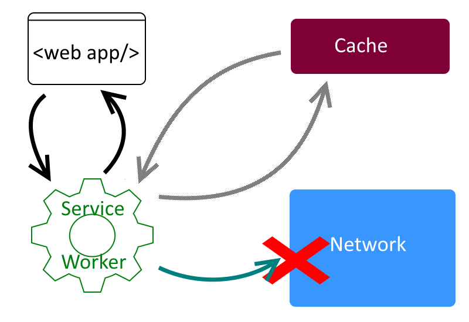
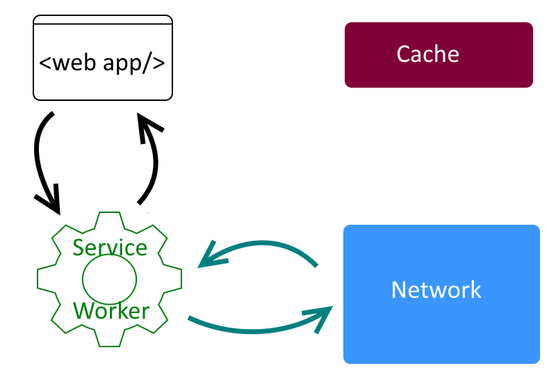
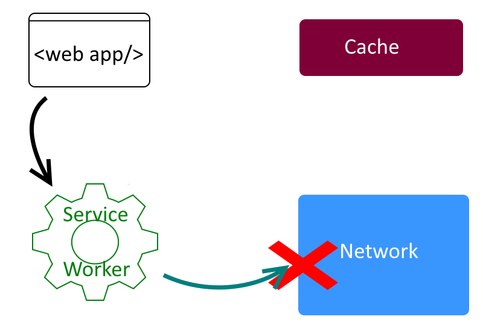

Offline capabilities of PWAs
Paweł Kamiński
Apps DE Architects & Engineers Summit 2017
Frankfurt 23 March 2017
Agenda
- Quick introduction to PWA
- To cache or not to cache ?
- Not only cookies
- Demo
- Q &A
Current State of Mobile Web
- Responsive Web Design

- Mobile first
- Hamburger menu icon

in 2017 it's not enough...
We want to web apps that
| in marketing jargon
|
Progressive Web Apps
- is a new way to deliver amazing user experiences on the web. Google
- is term used to denote a new software development methodology. Unlike traditional applications, progressive web apps are a hybrid of regular web pages (or websites) and a mobile application (...).Wikipedia
- are like good old web sites but better. In a modern browser they exhibit super–powersMozilla
Why should we care
Nine talks during Google I/0 2016

picture taken from Building Progressive Web Apps Today (Chrome Dev Summit 2016) Video
Service Worker
A service worker is a script that your browser runs in the background, separate from a web page, opening the door to features that don't need a web page or user interaction. Today, they already include features like push notifications and background sync. In the future service workers will support other things like periodic sync or geofencing.
Developers GoogleJake "The Service Worker" Archibald
- Introduced the concept in 2013
- is Service Worker Ready
App shell
An application shell (or app shell) architecture is one way to build a Progressive Web App that reliably and instantly loads on your users' screens, similar to what you see in native applications.
The app "shell" is the minimal HTML, CSS and JavaScript required to power the user interface and when cached offline can ensure instant, reliably good performance to users on repeat visits. This means the application shell is not loaded from the network every time the user visits. Only the necessary content is needed from the network.
Developers Googlemanifest.json
{
"short_name": "AirHorner",
"name": "Kinlan's AirHorner of Infamy",
"icons": [
{
"src": "launcher-icon-1x.png",
"type": "image/png",
"sizes": "48x48"
},
{
"src": "launcher-icon-4x.png",
"type": "image/png",
"sizes": "192x192"
}
],
"start_url": "index.html?launcher=true"
} Long Story ShortProgressive Web Apps are
- websites / webapps
- with some new features
- with App like use and feel
- framework agnostic
Example

taken from gossiplus.com
App shell
- HTML, CSS
- JS library and application files
- Images and other graphics
App cache
CACHE MANIFEST # 2012-02-21 v1.0.0 /theme.css /logo.gif /main.js NETWORK: login.asp FALLBACK: /html/ /offline.html
taken from w3schools
App cache cons
- Deprecated -> Removed From Web Standard
- Declarative, no detailed control
- Seciurity flaws
What if we could
var filesToCache = [
'/',
'/index.html',
'/scripts/app.js',
'/styles/inline.css',
'/images/clear.png',
'/images/cloudy-scatt.png'
] ; caches.open("MyCache").then(function(cache) {
return cache.addAll(filesToCache);
}) this.addEventListener('fetch', function(e) {
...
e.respondWith(
caches.match(e.request).then(function(response) {
return response;
})
);
...
})Yes we can
Service Worker Cache API
Service Worker Cache API
Static files
REST calls and dynamic data
Can we relay on cached dynamic data??
Cache First
Cache First
Cache First
Cache First
Cache First
Network First
Network First
Network First

Network First
Network First
Just Network
Network First
Just Cache

Just Cache

Race

Now lets talk about...
... data storage
Cookies
- Widely supported
- Synchronous
- Size limit: 4KB
- Strings only
- lives in window object -> inaccessible for service worker
- Cleared very often
HTML5 Storage
Local/Session storage
- Widely supported
- Synchronous
- Size limit : 2,5 ~5 MB
- Strings only
- Unstructured data
- lives in window object -> inaccessible for service worker
WebSQL
- Asynchronous
- Size limit : 2,5 ~5 MB
- Strings only
- Pre defined schema
- Quick search
- Deprecated
IndexedDB
- Asynchronous (event-based)
- Size limit : 10~20% of avaiable space
- Supported by Service Workers
- Complex Data Objects, Indexes, transactions, cursors
- "Worst API ever design in a history of computer science" Jake Archibald at Building offline-first PWA - Google I/O 2016
- Promise based wrappers localForage, idb, PouchDB
File system /File API.
- not yet widely supported
- specification in progress
- File Api specfication
Demo
Things I havne't mentioned
- Service worker lifecycle and install process
- Service worker works only on HTTPS connection
- IndexedDB
- Toolkit for Service Worker
alert("Q & A Time");
alert("Q & A Time");
Thanks for you attention